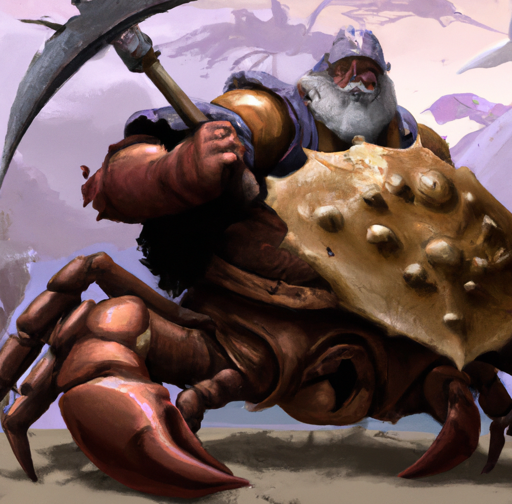

Introduction
🚧 This is book is a work in progress. 🚧
Welcome! This brief introduction will outline the status of dwarf, and set the stage for what's to come.
Before I get started, I need to state this this is the result of me hacking since April 2023.
As I write this that is about seven month and 80k lines of code ago.
So there is a lot of code, in a relatively short period of time.
Some of it is sloppy.
Some of it very much so.
But it's as correct as I can make it: "in rustc we trust", and praise be unto Henry and Milner for.
The one thing that it's almost guaranteed not to be is efficient.
I'm sure that I'm copying memory unnecessarily all over the place.
There are other areas ripe for critique, and I appreciate any and all feedback.
I appreciate anyone taking the time to bother to read the code to be honest.
In fact the code is sprinkled with notes to myself, and `// 🚧`` markers. The simple fact is that you can do it right, or do it quickly, and leave yourself as much context as possible.
Hello World
Every language deserves one, so let's get it out of the way. Go ahead and click the run button in the top right corner of the code-box below.
fn main() { let name = "World"; print("Hello " + name + "!"); }
Feel free to edit the code — replace World with your name maybe?
I know you want to. 😀
A brief story of dwarf
Caveat Emptor, Note Bene, etcetera
dwarf (the language and it's implementation, ChaCha) is very much a work in progress. The language itself is still evolving, and the implementation is still very much in flux. I don't honestly see very many breaking changes moving forward, however I can't promise anything until 1.0.
Dwarf started life as a DSL for another project. I've had so much fun with it, I want to see if anyone else might find it generally useful.
Because dwarf was intended as a DSL, the focus was not language design. I'm pretty sure if I had allowed myself that freedom that I'd still be working on it. And it would be weird...
So I based it on Rust. It shares most of it's syntax with Rust, while mostly maintaining the behavior of other interpreted languages. The one big exception is that dwarf is typed, like Rust.
That said, there is a lot missing. Traits for example are not to be found. Neither are there generics, or iterator adaptors. Enums are also a glaring absence. Some of these are missing only because I wanted to get this out the door. Others, like traits, may not have a place, and they may. It's all very unclear at this point, and will likely depend on demand. Other's, and those of my needs.
Right now dwarf is also very slow. (He's still working on his tunneling gear apparently.) It's slow because it's interpreted, and the foundations of the interpreter are not really built for speed. That said, there is a VM currently in the works, and it's already integrated with the interpreter to speed some things up.
Along the way I wrote a "debugger" and a REPL. The debugger is very basic. You have to set debugger statements in your code to get it to stop — there is no way to set a breakpoint form the tool. Once the program has stopped single stepping through the code is possible. There is also a "run" button to start it going again.
I began work on a DAP for VSCode (and others), but the documentation on the wire protocol is not easy to find. I put this on the shelf in favor of just publishing something a little more polished.
The REPL is really nice for playing around with the language. It's also a great way to prototype ideas.
So, thanks for taking a look, I hope you enjoy what you find!
A note regarding the code in this book:
The code snippets contained herein are executed by AWS Lambda. I've mentioned elsewhere that the interpreter is not fast. Running as a lambda, it's even not faster... er, slower. 😎
Language Walkthrough
Thanks for reading thus far! This section is a walkthrough of the language. It is designed to provide information in an order useful to someone new to programming.
A Quick Program
This will be a motivating example for the rest of the section:
fn print_number(n: int) { print("the number is {0}\n".format(n)); } fn main() { let a = 42; print_number(a); }
Functions and Statements
Let's start with functions and statements.
Functions are composed of statements between curly braces.
You already saw a function in the introduction.
That function printed () after the Hello, world! message.
In dwarf we just call that the empty type/value.
It's a type, and a value, and it's the only value of it's type.
A function (and any block for that matter) returns the value of it's last statement.
A statement that ends in a semi-colon has the empty value:
fn main() { print(""); }
On the other hand, a statement that does not terminate in a semi-colon has the value of it's expression:
fn main() -> int { 42 }
Expressions
There will be a lot more to say about expressions later. For now just know that basically everything in dwarf is an expression.
Let Statement
Not all statements are composed of expressions.
In particular is the let statement.
Since the let statement has no value, it must be terminated with a semi-colon.
The following is not valid and throws an error:
fn main() { let a = 42 }
The let statement is instead used to assign a value to a storage location, or memory. The storage location is called a variable, and has a name. You use the name to refer to the variable elsewhere in the function:
fn main() { let a = 42; print(a); }
Getting back to functions, functions take inputs, do something with them, and return an output. The following code defines a function that takes an integer, does some computation, and returns a string.
#fn main() { fn foo(a: int) -> string { let b = a * 2; "The value of b is {1}. This is here just to confuse you, {0}".format("hah!", b) } print(foo(42) + "\n"); }
Advanced Statements
There is a third type of statement, called an item statement. It's useful for defining structs and functions inside of a block expression. Below is an example of both:
fn main() { struct Point { x: float, y: float, } impl Point { fn new(x: float, y: float) -> Point { Point { x: x, y: y } } } fn foo() -> Point { Point::new(42.0, -3.14) } print(foo()); }
Conditional Expressions
Next up is the conditional expression. Conditional expressions are used to make decisions. They are composed of three parts: a condition, a then expression, and an else expression. The condition is an expression that evaluates to a boolean value. The then and else expressions are expressions that evaluate to the same type. The type of the conditional expression is the type of the then and else expressions. The following is an example of a conditional expression:
fn main() { let a = 42; let b = 69; let c = if a > b { a } else { b }; print(c); }
Expression Magic
Having everything as an expression pays great dividends. In the example above notice how we assign
cto the result of theifexpression.ifactually has a value, which is the value of it's evaluation. It's expressions all the way down. 🥁
There are all the usual comparison operators: ==, !=, <, <=, >, >=:
fn main() { chacha::assert_eq(42 == 42, true); chacha::assert_eq(42 != 42, false); chacha::assert_eq(42 < 42, false); chacha::assert_eq(42 <= 42, true); chacha::assert_eq(42 > 42, false); chacha::assert_eq(42 >= 42, true); }
#fn main() { //macro_rules! println { // () => { // print("\n"); // }, // ($arg:expr) => { // print($arg as string + "\n"); // }, // ($fmt:literal, $($arg:expr),*) => { // print($fmt.format($($arg),*) + "\n"); // } //} //printtln!(); print("\n"); //println!("Hello, world!"); print("Hello, world!" as string + "\n"); //println!("The answer is {0}, what's the {1}", 42, "question?"); print("The answer is {0}, what's the {1}".format(42, "question?") + "\n"); //println!(42); print(42 as string + "\n"); }
Golden Nuggets ⭐️🌟✨
-
The interpreter is called ChaCha, but the binary is called
dwarf. Go figure. -
I call input files
.tao, I don't remember why. None of the tooling cares what you name them. -
The interpreter looks for a
mainfunction, where it will begin execution.
fn main() { print("Hello, world!\n"); }
Passing command line arguments to main from the interpreter is supported.
- In dwarf, just about everything is an expression.
The only thing that is not an expression is a
letstatement. That's not true. Items inside blocks are also statements. So that's only two things that I can think of. Putting a semicolon at the end of an expression makes it a statement, but it's still an expression underneath. This is super powerful, and allows for some really cool things.
Mandelbrot Set
I imagine that everyone is familiar with the Mandelbrot set.
It's a fractal that is generated by iterating a function over the complex plane.
It makes really nifty pictures.
 .
.
Doing this in dwarf is not as pretty, as dwarf can only output to the terminal using the print expression.
So ours is going to end up looking more like the first-ever image of the set:
 .
.
The function that we'll be iterating to draw the set is really simple: \(f(z) = z^2 + c\), where \(z\) and \(c\) are both complex numbers. Basically, you fall within the set if \(z\) does not go to \(\infty\) when you iterate the function.
I mentioned that the set is over the complex plane, and dwarf doesn't grok ((i: complex numbers}}. That means that we'll need to invent our own complex type. As per above, we'll need to support addition and squaring. So, let's get started!
Coding a Complex Type
Complex numbers are really just a tuple of two floats.
One element is the real part of the number, and the other is the imaginary part.
The real part is plotted along the x-axis, and the imaginary part is plotted along the y-axis.
Addition and subtraction are defined as you would expect: perform the operation on the real and imaginary parts independently, e.g.: \((a, m) + (b, n) = (a + b, m + n)\). To multiply two complex numbers, one must refer back to multiplying two binomials: \((a + bi)(c + di) = bdi^2 + bci + adi + ac = bci + adi + ac - bd\). But don't get caught up in the math — it's not on the test.
Defining the Type
dwarf doesn't have tuples (yet) so we'll use structs like so:
#fn main() { struct Complex { re: float, im: float, } }
This is how we declare a user defined type in dwarf. It's the keyword struct followed by the name of the type, and then a block of fields. Each field in the block is a name followed by a type, separated by a colon. Each field is separated from another by a comma. Trailing commas are just fine.
In this specific case we have a struct called Complex that has two fields, each of type float.
The first is called re, and the second, im.
Initialization of a struct is done by a struct expression, just like Rust. if you are unfamiliar, a struct expression looks like the definition, but with values in place of types.
struct Complex { re: float, im: float, } fn main() { let z = Complex { re: 1.23, im: 4.56, }; chacha::assert_eq(z.re, 1.23); chacha::assert_eq(z.im, 4.56); }
The last two lines are functions provided by the runtime ChaCha.
chacha::assert_eq tests it's arguments for equality, and throws an error if they are not.
Complex Methods
Having a type is a good start. We can now create Complex numbers
Addition
Addition is fairly straightforward:
#fn main() { struct Complex { re: float, im: float, } impl Complex { fn add(self, other: Complex) { self.re = self.re + other.re; self.im = self.im + other.im; } } }
This is an impl block. Functions that belong to the struct go into the impl block.
Squared
Similarly, the square function is not too bad:
#fn main() { struct Complex { re: float, im: float, } impl Complex { fn square(self) { self.re = self.re * self.re - self.im * self.im; self.im = 2.0 * self.re * self.im; } } }
A Shortcut
Earlier I said that you know if you are in the set if you don't go to infinity and beyond. We don't have that much time, and there's a shortcut. While we are iterating, we can just check the absolute value of the complex number. If it is greater than 2 then we know that the number will go to infinity. When that happens we know that we are not in the set.
Rather than check the absolute value, we can just check of the value is greater than 4. The problem of course is that 4 is a scalar, and we are dealing with complex numbers. The solution is to take the norm, or dot product of the complex number.
#fn main() { struct Complex { re: float, im: float, } impl Complex { fn norm(self) -> float { self.re * self.re + self.im * self.im } } }
There is something worth noting in the last function. We are returning a float, but there is no return statement. Just like in Rust, the last expression in a block is the the value of the block.
Zero
We'll need to be able to create the Complex number "0". We can do that with a static method. Static methods are functions that belong to the type, rather than an instance of the type. Practically that means that the function does not take a self parameter.
struct Complex { re: float, im: float, } impl Complex { fn zero() -> Complex { Complex { re: 0.0, im: 0.0, } } } fn main() { let zero = Complex::zero(); chacha::assert_eq(zero.re, 0.0); chacha::assert_eq(zero.im, 0.0); }
Rendering the Set
struct Complex { re: float, im: float, } impl Complex { fn zero() -> Complex { Complex { re: 0.0, im: 0.0 } } fn add(self, other: Complex) -> Complex { Complex { re: self.re + other.re, im: self.im + other.im, } } fn add_2(self, other: Complex) { self.re = self.re + other.re; self.im = self.im + other.im; } fn square(self) -> Complex { Complex { re: self.re * self.re - self.im * self.im, im: 2.0 * self.re * self.im, } } fn square_2(self) { let re = self.re * self.re - self.im * self.im; self.im = 2.0 * self.re * self.im; self.re = re; } fn norm_squared(self) -> float { self.re * self.re + self.im * self.im } } fn pixel_to_point( width: int, height: int, pixel_x: int, pixel_y: int, upper_left: Complex, lower_right: Complex, ) -> Complex { let w = lower_right.re - upper_left.re; let h = upper_left.im - lower_right.im; Complex { re: upper_left.re + pixel_x as float * w / width as float, im: upper_left.im - pixel_y as float * h / height as float, } } fn escape_time(c: Complex, limit: int) -> int { // debugger; let z = Complex::zero(); for i in 1..limit { // z = Complex::square(z); // z = Complex::add(z, c); // z.square_2(); // z.add_2(c); ComplexEx::square(z); ComplexEx::add(z, c); let foo = ComplexEx::norm_squared(z); if foo > 4.0 { return i; } } 0 } fn main() -> () { print("Total time: {0}s\n".format(chacha::time(plot))); } fn plot() -> () { let width = 42; let height = 10; let upper_left = Complex { re: -2.5, im: 1.0 }; let lower_right = Complex { re: 2.0, im: -1.0 }; let t = 50; for row in 0..height { do_column(t, row, width, height, upper_left, lower_right); } print("{0}\n".format(chacha::eps())); } fn do_column(time: int, row: int, width: int, height: int, upper_left: Complex, lower_right: Complex) { for column in 0..width { let point = pixel_to_point(width, height, column, row, upper_left, lower_right); let time = escape_time(point, time); if time > 0 { print(" "); } else { print("*"); } } print("\n"); }
Enumerations
Functions
Imports
Patterns
Structs
Statements
dwarf, like Rust uses only a handful statements.
Let Statement
The let statement is used to assign a value to a variable.
#fn main() { let x = 42; }
Expression Statement
Result Statement
#fn main() { fn empty() -> () { 42; } fn value() -> int { 42 } print(empty()); print(value()); print({}); print({42}); }
Item Statement
fn main() -> () { // This is aa item statement. // Note the lack of a semicolon. struct Point { x: float, y: float, } // This is also an item statement. fn foo() -> Point { Point { x: 42.0, y: -3.14 } } // Technically this is a statement, but `print` is an expression. print(foo()); }
Literal Expressions
Unary Expressions
Binary Expressions
Equality
The equals operator (==) tests two expressions for equality and returns a bool.
fn main() { print(1 == 1); // true print(1 == 2); // false }
Equality is a tricky thing. There is reference equality, and value equality. I've taken the perspective that if you can point to two different things, even if they are identical, they are still two different things. This is reference equality.
Equality is transitive. There is exactly one
unique representation of 1in the language, and in the CPU. That is why the following works.fn main() { let a = 1; let b = 1; print(a == b); // true }struct Foo {} struct Bar { bar: int } fn main() { let a = Foo {}; let b = Foo {}; let e = b; print(e == b); // *true* let c = 1; let d = c; print(a == b); // *true* print(c == d); // true? false? *true*! let f = Bar { bar: 1 }; let g = Bar { bar: 1 }; let h = f; print(h == f); // true print(f == g); // true? false? *true*! f.bar = 2; print(f == g); // true? false? *false*! print(h == f); // true? false? *true*! }That said, it's a matter of perspective. ChaCha knows about references, but dwarf does not.
Built-in Types
dwarf contains a handful of primitive types.
String
The string type is a wrapper for Rust's String type.
That is to say that it is a proper unicode string, encoded as UTF-8.
#fn main() { let s: string = "Hello, world!🎉💥"; // Note the addition operator below. print(s + "\n"); // Strings are also iterable. for c in s { print(c + "\n"); } // Of course you can fetch the length of a string. let len = s.len(); // Note that indexing into a string is zero based. Also, we are indexing by // unicode graphemes, which is a "printable character". chacha::assert_eq(s[len - 1], "💥"); chacha::assert_eq(s[len - 2], "🎉"); chacha::assert_eq(s[len - 9], " "); // index into a string with a range. print("{0}{1}\n".format(s[0..5], s[len - 3])); // Hello! // Strings also support substitution via the `format` method. // The string contains {?}, where ? is a number that corresponds to a positional // argument to the `format` method. Like most everything else in dwarf, the // arguments to the method are arbitrary expressions. print("The length of the string is {0}. {0} * {0} = {1}\n".format(len, len * len)); let answer = 42; let question = "Huh?"; let msg = "The answer to life, the universe, and everything is {1}. {0} Really, {1}\n"; print(msg.format(question, answer)); }
Vector / List
The vector type is a wrapper for Rust's Vec type.
That is to say that it is a growable array.
At this time it's not possible to name the type of this, which is why there's a slash in the heading. In order to name this type dwarf would need to first support generics. This is likely to happen in the near future.
#fn main() { // 🚧 I need some sort of example. What do I want to do with these? There are // all sorts of iterator functions that we could surface, but I'd pretty much // need closures to do that. // And now we have closures! So I need to get to this. let c = [1, 2, 3, 4, 5]; let func = fn (x: int) -> int { return x * x; }; print(func()); }
User-defined Types
ChaCha Runtime Reference
The interpreter is started via the dwarf binary:
Usage: dwarf [OPTIONS] [SOURCE] [-- <ARGS>...]
Arguments:
[SOURCE]
Dwarf Source File
Local path, or URL of the source file to execute.
[ARGS]...
Dwarf main arguments
These arguments are passed on to the dwarf `main` function.
Options:
-d, --dap
Debug Adapter Protocol (DAP) Backend
Enable the DAP backend. This will start a TCP server on port 4711.
-r, --repl
Post-execution behavior
Drop into the REPL after executing the source file.
-b, --banner
Print the dwarf banner
--bless
Bless a test
This is only useful if you are writing tests for dwarf. I'd really like it if clap had hidden arguments.
--uber
Do uber stuff
This is like sudo mode. You probably don't want this.
-s, --stdin
Stdin
Read source file from stdin.
-h, --help
Print help (see a summary with '-h')
-V, --version
Print version
args
Command line arguments are made available to a running program as a vector of strings via the chacha::args function:
fn main() { for arg in chacha::args() { print(arg + "\n"); } }
Parse and Eval
Misfortunately I haven't hacked all the HTTP nonsense necessary to pass command line arguments from here. I might get to it before release.
typeof
This is exactly what it sounds like. Pass a value, and see what type it is:
#fn main() { print("42's type: {0}\n".format(chacha::typeof(42))); print("42.0's type: {0}\n".format(chacha::typeof(42.0))); print("true's type: {0}\n".format(chacha::typeof(true))); print("false's type: {0}\n".format(chacha::typeof(false))); print("[0, 1, 2, 3]'s type: {0}\n".format(chacha::typeof([0, 1, 2, 3]))); print("0..100's type: {0}\n".format(chacha::typeof(0..100))); }
#fn main() { }
#fn main() { struct Foo {} //print("Foo\{\}'s type: {0}\n".format(chacha::typeof(Foo{}))); print("{0}\n".format(chacha::typeof({}))); print("{0}\n".format(chacha::typeof(["0", "1", "2", "3"]))); print("\"42\"'s type: {0}\n".format(chacha::typeof("42"))); // print(chacha::typeof(()) ); }
#fn main() { struct Complex { re: float, im: float, } impl Complex { fn square(self) { self.re = self.re * self.re - self.im * self.im; self.im = 2.0 * self.re * self.im; } } }
For Hackers
"The best programmers are not always the most productive. They are the ones who are able to let go of their ego and embrace the Tao. They write code that is simple and elegant, yet powerful and efficient. They understand that the best code is the code that is not written. They know that the best way to solve a problem is to avoid it altogether. They are like water, which flows around obstacles and finds the path of least resistance. They are the masters of their craft, yet they remain humble and open to learning. They are the ones who create software that is a joy to use and a pleasure to maintain."
First off, the code is pretty rough. I've been hacking on this pretty much non-stop for three months. And the code generator is still in it's infancy too.
Parser
The problem with parser generators is that you need to understand how a parser works in order to use one. If you don't understand how a parser works, you're going to get confused, and frustrated. The next thing you know parser generators are terrible, evil beasts from the nether depths of the endless turtle Ouroboros. You'll write your own, buggy, hard to maintain parser, or you'll learn how the work, and build a well-behaved parser. In the latter case, you'll then be able to use a parser generator.
So, I couldn't get the evil parser generator to pay attention to my needs.
A Path to Async
Async Implementation
dwarf is written in Rust, and Rust's asynchronous support comes in the form of futures
It thus makes sense that dwarf's async model be implemented using futures.
And indeed, that is part of the story.
The full story is however a bit more complex and nuanced.
A simple way of looking at dwarf is an expression evaluation engine.
Values go in, and values come out.
Given this, we have a few places where it makes sense to crack the shell and look inside.
If you consider futures in Rust, it's all about the return type.
The return type is even named after the abstraction: Future.
Since evaluation of an expression returns a value, it makes sense to leverage that and add a Future to our Value enum.
Since this is Rust, what starts as a good idea quickly becomes complex.
Delving into dwarf
There are a bare few things that we need to know about dwarf before we can start to discuss adding async support.
Perhaps the most significant aspect is that nearly everything in dwarf is an expression.
Expressions are evaluated using the eval_expression function in ChaCha, the interpreter.
Generic Types
Today we're going to talk about how generics are implemented in dwarf. Generics are a type of polymorphism, which is a way to have one chunk of code work with multiple types. In the generic code, the abstract type is specified by a single capital letter. When the code is compiled the abstract type is replaced with a concrete type. The concrete type is inferred from the call site.
Below are examples of a generic function and a generic type, as well as a usage of each.
// This is a generic function. // It takes a type T and returns a value of type T + 42. fn plus_42<T>(x: T) -> T { x + 42 } // This is a generic type. // It takes a type T and stores a value of type T. struct Box<U> { value: U, } impl Box<U> { fn display(self) { print("Box<{0}>\n".format(self.value)); } } fn main() { // Here we call the generic function with an int. let x = plus_42(0); print("{0}\n".format(x)); // And here with a float. let y = plus_42("Hello World, the answer is "); print("{0}\n".format(y)); // Here we create a Box that stores a float. let z = Box{ value: 0.42 }; z.display(); // Let's box a list now. let α = Box{ value: [1, 2, 3] }; α.display(); // Let's try something interesting... let β = Box{ value: plus_42("") }; β.display(); print(β); }
In the examples above notice that the generic labels, T and U, are used in the function and type definitions.
The code in the main function uses the generic function and type with no label to be seen.
That is because concrete types are used in the non-generic, non-definition code.
Requirements
So what does it take to make this happen in dwarf? Well, like everything else, there's a parser piece, an extruder piece, and an interpreter piece.
The parser reads the input and looks for generic annotations where appropriate. The extruder takes the output of the parser and builds the AST, substituting the generic placeholder with a concrete type. The interpreter then takes the AST and evaluates it.
Parser
Rather than go into how the parser works, which is covered in the parser section of the hacker book,
Extruder
Grace AST Model
Below is an approximation of (a part of) the model that is used to generate (a part of) the dwarf abstract syntax tree (AST). The diagram is UML-ish, and says that Type is a supertype, and everything connected by an R1 label is it's subtype. Field has two relationships, R3 and R4, to Struct and Type respectively. These relationships are backed by "referential attributes" whose purpose is to store the relationship data. In the case of Field, struct formalizes R3 and type formalizes R4.
The points worth reflecting upon are that Type is a generalization over all of the dwarf types. Also, Field and Generic both have relationships to Type. separate from R1.
classDiagram
Type <|-- Generic : R1
Type <|-- Integer : R1
Type <|-- Struct : R1
Type <|-- Etcetera : R1
Generic --> "0..1" Type : R2
Struct "1" <-- "0..*" Field : R3
Field --> Type : R4
class Type
<<Enumeration>> Type
class Generic {
label: String
*type: Option~R2_Type~
}
class Struct {
name: String
}
class Field {
name: String
*struct: R3_Struct
*type: R4_Type
}
There is a real model that is much more extensive that is used to generate the AST code.
Below is the generated code for the actual Type, called ValueType in the code.
#![allow(unused)] fn main() { pub enum ValueType { Char(Uuid), Empty(Uuid), Enumeration(Uuid), Function(Uuid), Future(Uuid), Generic(Uuid), Import(Uuid), Lambda(Uuid), List(Uuid), ObjectStore(Uuid), Plugin(Uuid), Range(Uuid), Struct(Uuid), Task(Uuid), Ty(Uuid), Unknown(Uuid), } }
The Ty variant is actually imported from yet another, fundamental, model.
It's definition is below, ond contains what one might expect, given what is missing from above.
These are the fundamental modeling types, whereas above are the dwarf types.
#![allow(unused)] fn main() { pub enum Ty { Boolean(Uuid), External(Uuid), Float(Uuid), Integer(Uuid), Object(Uuid), String(Uuid), Uuid(Uuid), } }
#fn main() { let definition = " struct Box<T> { value: T, } "; print(definition); let ast = chacha::parse(definition); print(ast); }
Mention something about assuming the type of a field expression, and then having to use that to check type.
Interpreter
Index
(),
Language Walkthrough
AST,
Generic Types
Async,
Async Implementation
block,
Language Walkthrough
block expression,
Language Walkthrough
bool,
Binary Expressions
ChaCha,
Introduction,
Language Walkthrough,
Coding a Complex Type,
Binary Expressions,
Async Implementation
command line arguments,
Language Walkthrough
comparison operators,
Language Walkthrough
Complex numbers,
Coding a Complex Type
condition,
Language Walkthrough
conditional expression,
Language Walkthrough
dwarf,
Introduction
else expression,
Language Walkthrough
empty,
Language Walkthrough
equals, see ==
expression,
Language Walkthrough
==,
Binary Expressions,
Binary Expressions
if,
Language Walkthrough
print,
Mandelbrot Set
struct expression,
Coding a Complex Type
extruder,
Generic Types
format,
Built-in Types
fractal,
Mandelbrot Set
function,
Language Walkthrough,
Language Walkthrough
future, see futures
futures,
Async Implementation
Grace,
Generic Types
Hello World,
Introduction
interpreter,
Generic Types
item,
Language Walkthrough
main,
Language Walkthrough
Mandelbrot set,
Mandelbrot Set
Parser,
Parser
parser,
Generic Types
statement,
Language Walkthrough,
Statements
Expression Statement,
Statements
Item Statement,
Statements
let,
Language Walkthrough,
Language Walkthrough,
Statements,
Statements
Let Statement, see let
Result Statement,
Statements
static method,
Coding a Complex Type
string,
Built-in Types,
ChaCha Runtime Reference
struct,
Coding a Complex Type
struct,
Language Walkthrough
then expression,
Language Walkthrough
tuple,
Coding a Complex Type
types,
Built-in Types
float,
Coding a Complex Type
variable,
Language Walkthrough
vector,
Built-in Types,
ChaCha Runtime Reference
Postface
I started dwarf on April 6, 2023.
It was meant to be as a DSL for it's parent project sarzak.
I wrote the date down because I wanted to know how long this side-trip took once I was done.
I was concerned that I'd spend too long on it, and I was excited to put it to use.
As you can see, it's all sort of gotten away from me since then.
It's a long way from being done, and I keep adding features.
It's grown far beyond the needs of my DSL, and yet I keep tweaking it.
I guess I'm having fun. 😀
Dwarf looks a lot like Rust — that's on purpose.
You see, I wanted to use sarzak to generate Rust code for dwarf.
Making that work was enough of a mental load.
Adding "programming language design" was more than I needed to deal with.
Like I already mentioned, dwarf is meant to be a DSL, and I plan on hacking on it quite a bit.
The more it looks like, and acts like Rust, the happier a cowboy be me.
Dwarf contains generated code — a lot of it. Counting lines of code is a pretty terrible metric. "Semantic density" varies within a language, and between languages. Should you include comments?
Now that we've established loc is useless, here are some numbers.
As I write this there are (15/2)k (code/comments) loc that I've written myself.
The last time I generated the LuDog/AST-dwarf interface code it was 11k/300.
Each LuDog/AST backend "store" is (9/1.4)k, and I could generate at least five (Rc, (parking_lot | std)::Mutex, (parking_lot | std)::RwLock). 1.
I have no idea what I'll end up actually shipping.
I won't bother to include the generated code upon which the stores depend.
Regardless, there are some metrics to gain insight into the ratio of generated to hand-written code.
The code generator is called grace, which I began in January 2023.
Dwarf is in fact necessary for me to continue work on grace.
Once I've escaped this recursive rabbit hole, I'll publish the whole mess.
So really, this is an experiment. An exciting, fun, experiment
— Keith Star (June 8, 2023)

After benchmarking the differences between Parking Lot and std, I got to digging. Apparently the std sync stuff was recently updated.